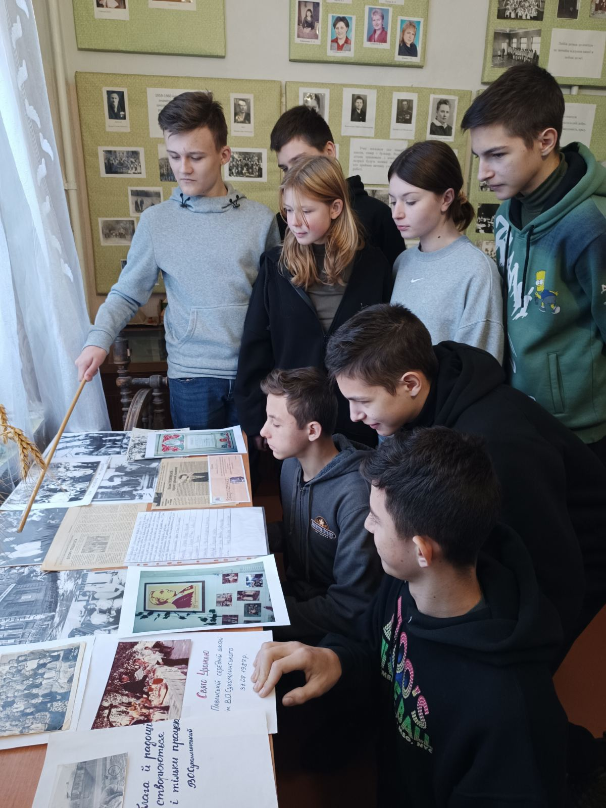
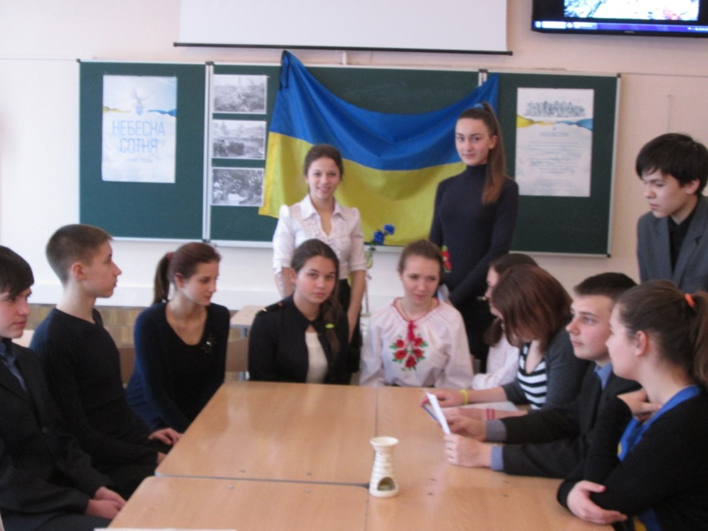

Дослідницько-пошукова група «Пошук»
На основі небайдужих до історії рідного краю та школи старшокласників створена дослідницько-пошукова група «Пошук».
Завдання та проєктні технології групи:
- Виготовлення наочних матеріалів та створення історично-культурних композицій.
- Написання конкурсних, творчих та пошуково-дослідницьких робіт.
- Проведення оглядових та тематичних екскурсій у музеї.
- Організація та участь у заходах до Дня Пам'яті та Дня Перемоги.
- Відновлення елементів побуту та сцен із минулого життя українського народу.

Учасники клубу "Пошук" за роботою у музеї

Дослідницько-пошукова діяльність групи "Пошук"